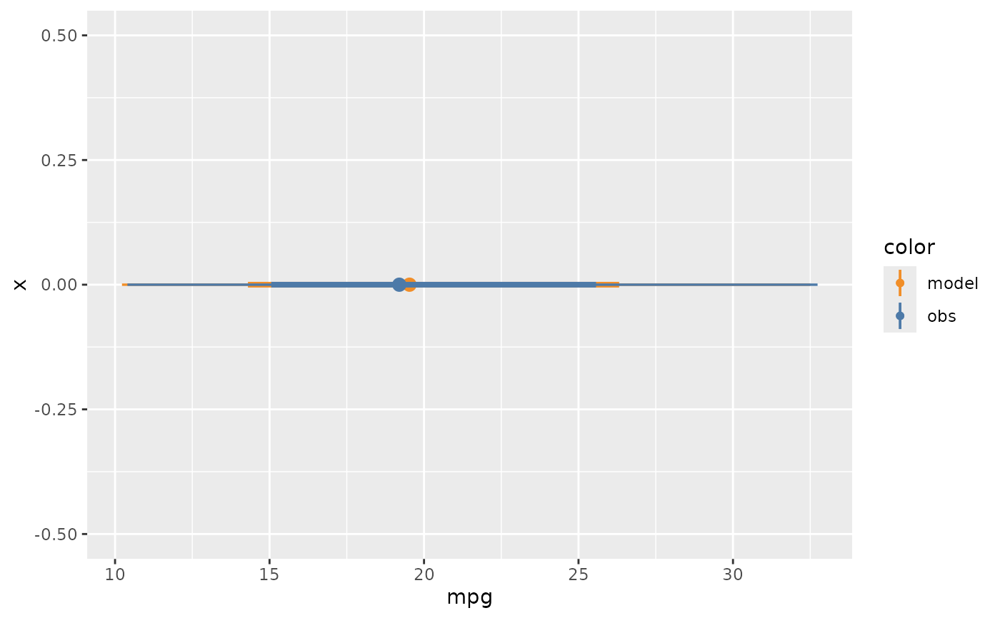

Point + interval plot for model predictions
mc_model_pointinterval.RdPoint + interval plot for model predictions
mc_obs_pointinterval(...)
mc_model_pointinterval(..., n_sample = NA, draw = "collapse")Arguments
- ...
- n_sample
The number of sample of draws to show in pointinterval plot. Default
NA. Ifn_sampleisNA, thenmc_model_pointinterval()will use all draws from posterior distribution.- draw
How to show draws? Default
"collapse". Ifdrawis"collapse", then all draws are collapsed together to show in one pointinterval plot; ifdrawis"group", then each draw is shown in an individual pointinterval plot; ifdrawis"hops", thenmc_model_pointinterval()will use animation to show each draw in one frame; ifdrawis an function, then all draws are aggregated bydraw(). See examples for more details.
Examples
library(ggplot2)
mcplot(mpg_model) +
mc_model_pointinterval(n_sample = 50) +
mc_obs_pointinterval() +
mc_gglayer(coord_flip())

mcplot(mpg_model) +
mc_model_pointinterval(n_sample = 50) +
mc_obs_pointinterval() +
mc_condition_on(x = vars(disp))